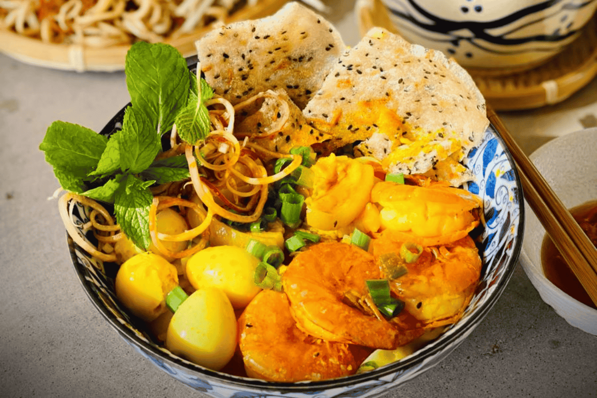
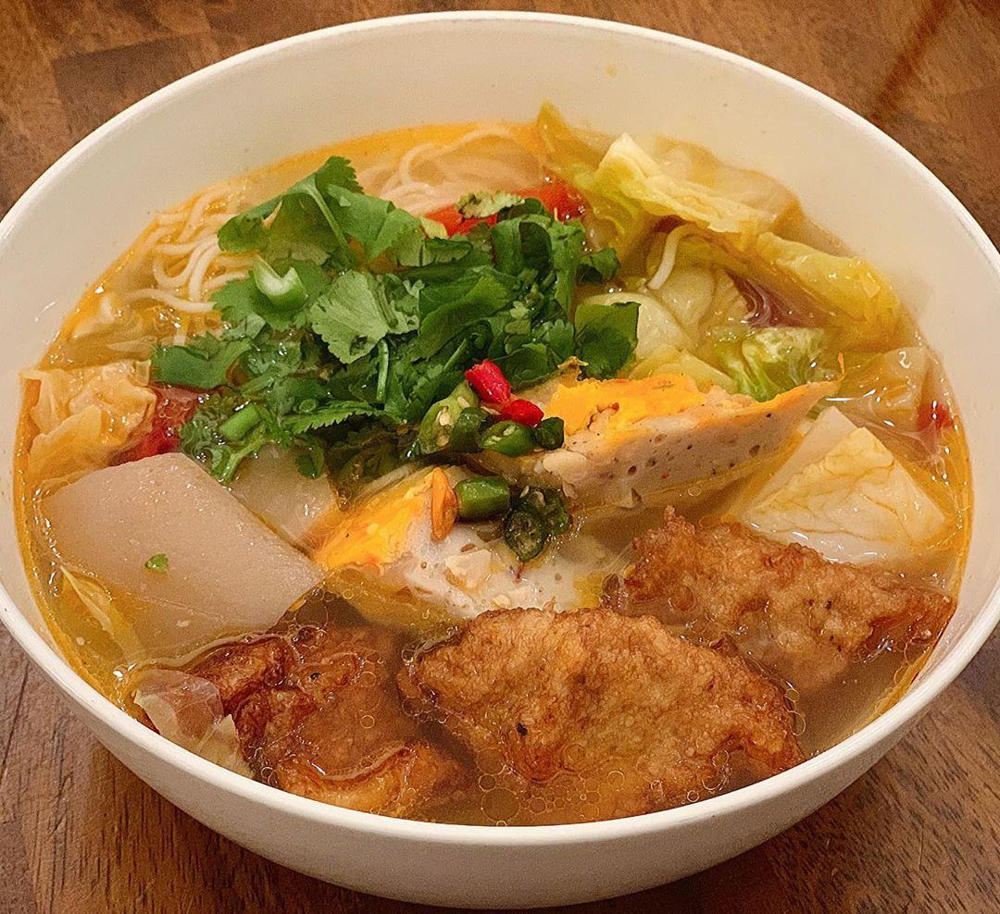
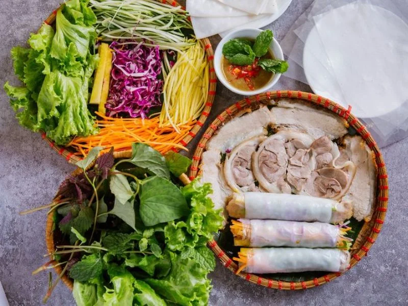
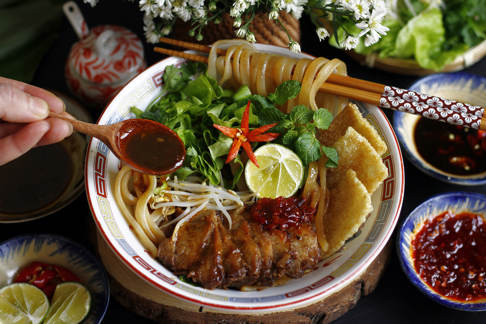

Mì Quảng
Mì Quảng là món ăn nổi tiếng của miền Trung. Món ăn thường có sợi mì, thịt hoặc tôm, rau sống, đậu phộng và phần nước dùng đậm đà.
Khám phá hương vị ẩm thực miền Trung

Mì Quảng là món ăn nổi tiếng của miền Trung. Món ăn thường có sợi mì, thịt hoặc tôm, rau sống, đậu phộng và phần nước dùng đậm đà.

Bún chả cá là món ăn quen thuộc tại Đà Nẵng. Nước dùng có vị thanh, kết hợp với chả cá và các loại rau, tạo nên một món ăn hấp dẫn.

Món ăn gồm thịt heo luộc, bánh tráng, rau sống và các loại rau thơm. Khi ăn, các nguyên liệu được cuốn lại và chấm cùng mắm nêm đậm đà.

Cao lầu là món ăn đặc trưng của Hội An, một địa điểm nằm gần Đà Nẵng. Món ăn có sợi mì đặc biệt, thịt xá xíu, rau sống và các loại topping.